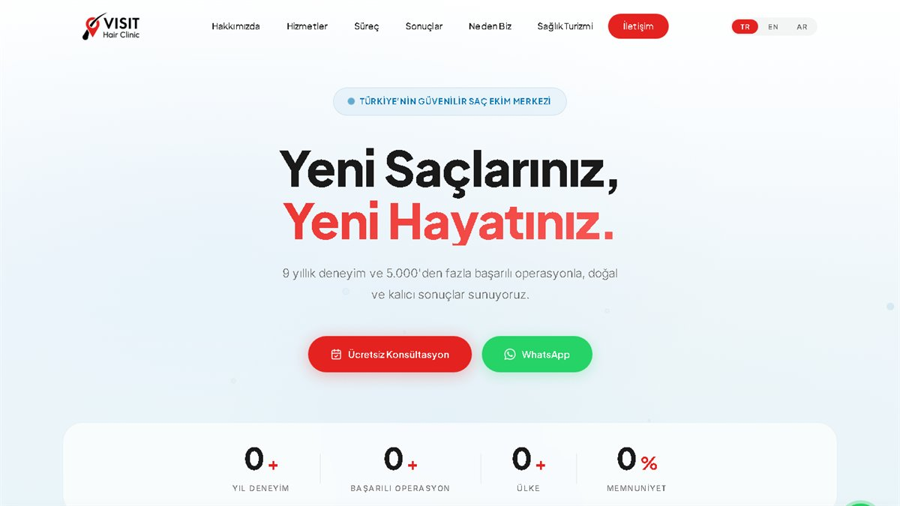

Visit Hair Clinic
Kendi alan adında yayında. Türkçe, İngilizce ve Arapça olmak üzere üç dilli; öncesi/sonrası galerisi, sıkça sorulan sorular bölümü ve Google için yapılandırılmış veri ile hazırlandı.
3 Dilli
Öncesi/Sonrası Galeri
SEO
Siteyi Aç